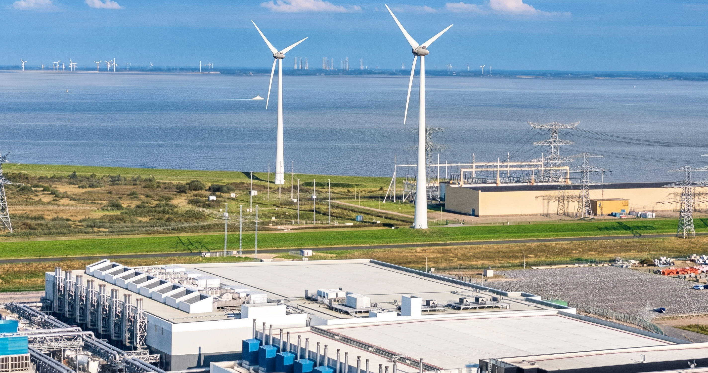
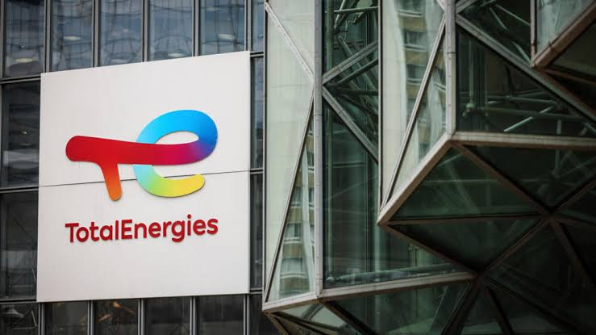

The Rebound Effect (Jevons Paradox)
As technology becomes more efficient, affordable, and faster, overall usage surges. Even if the footprint per request drops, the massive increase in global query volume risks offsetting all environmental gains.
Artificial intelligence consumes massive amounts of resources. While the industry often remains silent on its environmental costs, Mistral AI breaks the mold by publishing an unprecedented Life Cycle Assessment (LCA), conducted in partnership with ADEME and Carbone 4.
Where some tech giants lack transparency on these metrics, Mistral AI has documented the entire life cycle of its flagship model, Mistral Large 2. The study covers various life cycle stages, including equipment manufacturing, operation, model training, and inference, following strict ISO 14040/44 and GHG Protocol standards.
| Environmental Indicator | Global Footprint (18 months of training & usage) | Footprint per Request (400 tokens on Le Chat) |
|---|---|---|
| Greenhouse gas emissions | 20.4 kilotons of CO₂e | 1.14 g CO₂e (equivalent to an LED light bulb turned on for a few minutes) |
| Freshwater consumption | 281,000 m³ of water | 45 mL (about a small glass of water or ~55s of HD video streaming) |
| Mineral resource depletion | 660 kg antimony equivalent (Sbₑ) | Included in hardware and circuit board depreciation |
Why use a semi-truck to deliver a simple letter? American tech giants deploy massive models with hundreds of billions of parameters, even for basic questions.
Mistral AI chooses to build lightweight yet highly efficient models, such as Mistral 7B or Mixtral 8x7B. The direct benefit: fewer computations needed, lower server loads, and reduced electricity consumption.
The Open-Weights approach makes the model "brains" downloadable. Companies and researchers can run them locally on their own optimized machines.
This avoids sending millions of network requests daily to giant data centers across the globe. By reducing endless network traffic and enabling local AI execution, Open-Weights minimizes the overall carbon footprint tied to data transfer.
An AI's ecological footprint depends heavily on where the server is located. In the US or Asia, many data centers still run on coal (emitting around 1 kg of CO₂ per kWh) or natural gas (around 400 g of CO₂ per kWh).
Data center location is a critical factor, as the carbon intensity of electricity varies significantly depending on the local energy mix. Low-carbon electricity drastically reduces emissions linked to server usage.
Training a model in France emits far less CO₂ than training it in an American region dependent on fossil fuels.

Veolia leverages Mistral AI models to enhance monitoring and management across its water, waste, and energy facilities. The main goal is to help operators leverage available data more effectively, improve facility tracking, and optimize water and energy consumption.

In a joint innovation lab, TotalEnergies deploys Mistral models to perform predictive maintenance on its industrial assets. AI detects equipment anomalies before failures occur, preventing emergency shutdowns that consume large amounts of energy.
Furthermore, AI models simulate and optimize wind and solar farm production, enabling better weather-based predictions and smoother integration of green energy into the power grid.

As technology becomes more efficient, affordable, and faster, overall usage surges. Even if the footprint per request drops, the massive increase in global query volume risks offsetting all environmental gains.
Even with low-carbon electricity, hardware itself carries a heavy environmental footprint: metal extraction and processing, chip manufacturing, servers, printed circuit boards, and electronic waste management.
Due to the lack of a binding global standard, comparing Mistral AI's figures with those of American competitors remains difficult, as the latter do not publish their data with the same level of granularity.